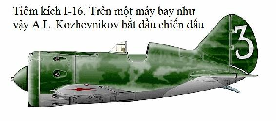

Thảo nguyên trên vùng sông Đông trải dài vô tận. Bầu trời tháng Sáu mênh mang xanh đến chói chang. Không khí nồng nực, trong suốt, run rẩy chảy tràn trên thảm cỏ úa vàng. Thật chẳng muốn làm gì, chỉ ước được xuống sông Đông ngâm mình cho mát mẻ. Ngày nay là ngày chủ nhật, nhưng sân bay nhà trường này ngay từ sáng sớm đã ầm ĩ bởi hàng chục động cơ máy bay với công suất mạnh nổ máy. Những chiếc tiêm kích cất cánh lao vút lên không trung, sau khi để lại trên mặt đất những cuộn lốc bụi. Những chiếc khác, sau khi hạ cánh lại lăn về sân đỗ. Các học viên không tắt máy, thay nhau vào buồng lái bay những chuyến bay mới. Kỳ thi sát hạch sắp tới rồi và họ cố gắng gấp gáp kết thúc kế hoạch bay.
Tôi cùng với giáo viên bay của tổ bay đầu tiên- Nhicôlai Nhexcherencô để lại chiếc máy bay huấn luyện hai buồng lái trên sân đỗ, đi bộ hướng "căn nhà vuông" (căn nhà kẻ những ô vuông sơn màu đen trắng, làm chỗ nghỉ sau khi bay).
- Thế là kết thúc!- Nhexcherencô nói khi bước vào nhà và tháo mũ bay.- Ngày hôm nay tôi đã làm đến 7 lần cất hạ cánh rồi, không hề bước ra khỏi buồng lái tý nào... Còn anh thì sao?
- Tôi ít hơn anh một chút, - tôi trả lời. Chỉ còn một học viên với một chuyến bay nữa là xong. Chúng ta cùng theo dõi chứ?
Các nhóm bay của chúng tôi thi đua với nhau, vì vậy, khi kết thúc ngày bay, chúng tôi đều thông báo cho nhau biết thành tích của mình.
- Giá mà bây giờ được xuống tắm dưới sông Đông nhỉ! - Nhicôlai ước ao, ưỡn đôi vai rộng.
- Chính ủy đã hứa chiều nay sẽ dẫn ra bãi tắm kia mà...
- Có nghĩa là chúng ta sắp được tắm rồi!
Trong "căn nhà vuông" không khí luôn luôn sôi động. Các học viên thì sôi nổi thảo luận về những chuyến bay đơn, đặc biệt là những lần hạ cánh. Trên tường treo những bức tranh biếm họa nhẹ nhàng và những bức tranh vui, ở đó người ta mô tả những khuyết điểm và viết tên những người vượt trội hơn số khác bằng mực màu đỏ.
Một chàng trai với vóc người cân đối và nước da rám nắng chạy đến chỗ tôi:
- Báo cáo đồng chí giáo viên, - cậu ta nói, - học viên Gutrêch đã sẵn sàng cho chuyến bay.
- Ngày hôm nay đây là chuyến bay chót, và cũng là chuyến bay sát hạch đấy, - tôi nhắc cho Gutrêch biết.- Hãy cố gắng điều khiển cho thật chuẩn. Hiểu nhiệm vụ rồi chứ?
- Báo cáo rõ! - Cậu ta trả lời một cách tin tưởng và lần lượt trình bày cách thực hiện các động tác nhào lộn một cách dứt khoát.
- Đừng quá tập trung căng thẳng, thời gian những 30 phút cơ mà, - tôi nhắc cậu ta trước khi bay và cho phép thực hiện chuyến bay.
Sau khi buộc chặt mũ bay trên đường đi, cậu ta khéo léo khoác dù vào người và trèo vào buồng lái máy bay. Thật thú vị khi quan sát những động tác không chê vào đâu được của cậu ấy. Và máy bay đã từ từ tách đất, lấy tốc độ rồi kéo lên lấy độ cao.
Trong không vực bay, chiếc tiêm kích ngoan ngoãn nghe theo sự điều khiển của Gutrêch lần lượt vòng mặt bằng với độ nghiêng lớn hết vòng này đến vòng khác, rồi lật bay ngửa, ghìm xuống bay sát mặt đất, lượn nửa vòng ê-lip. Trong tích tắc, ở điểm cuối của động tác nhào lộn, máy bay bỗng giật theo phương thẳng đứng với đường cong khép kín rất nhanh.
- Thật là cừ khôi! Một tay tiêm kích thực sự! Hãy nhìn xem, cậu ấy cảm nhận không gian như thế chứ - Nhexcherencô hồ hởi nhận xét, - cậu ấy sẽ nện được bất kể kẻ thù nào cho mà xem. Có một học trò như vậy, anh sẽ không cảm thấy xấu hổ đâu.
Hoàn thành động tác nhào lộn cuối cùng, giảm độ cao bằng cách xoắn gấp xuống, học viên tiến vào hạ cánh.
- Giỏi lắm! - Tiếng ai đó trong số những người quan sát chuyến bay khen, - xác định tầm và hướng, tiếp đất chuẩn đấy.
Máy bay giữ hướng xả đà thẳng tắp, dừng lại giây lát, giảm vòng quay và lăn thoát ly khỏi đường cất hạ cánh. Học viên tắt máy và nhanh nhẹn rời khỏi buồng lái.
Trên khuôn mặt của cậu ta sáng ngời niềm vui không giấu giếm - rằng tôi đã đạt được mục đích của mình rồi!
Tôi nhìn ngắm Gutrêch mà thấy lẫn lộn cả vui, buồn. Tôi nghĩ, chẳng bao lâu nữa cậu ta sẽ nhận quyết định phong quân hàm sĩ quan lần đầu tiên, rồi nhận trang phục phi công chiến đấu và sẽ được đưa về đơn vị chiến đấu. Thế là bắt đầu cuộc sống độc lập của đời tiêm kích. Còn tôi, lại vẫn như xưa, tiếp tục huấn luyện cho các học viên mới, trẻ như cậu ta về cách thức nhào lộn, khơi dậy trong họ tình yêu nghề bay và sự phục vụ quân đội. vẫn biết - đấy là công việc vinh quang đấy, nhưng tôi vẫn mong muốn mình được trực tiếp phục vụ trong trung đoàn Không quân tiêm kích, ở nơi nào đó gần biên giới. Ước mơ ấy làm cho tôi thấp thỏm không yên. Thèm muốn làm sao khi được trở thành phi công với nhiệm vụ bảo vệ không phận của Tổ quốc!
Phát pháo hiệu đỏ vút lên báo hiệu đã kết thúc kế hoạch bay của ban bay đầu tiên. Lá cờ không quân được hạ xuống. Chúng tôi lăn tất cả máy bay về sân đỗ và về nghi ngơi.
Các học viên của ban bay thứ hai đã ra sân bay. Họ bước đi trong im lặng, trên khuôn mặt họ - hiện lên nỗi lo lắng không bình thường, mọi người lại còn đeo theo cả mặt nạ phòng độc nữa. Điều đó làm cho chúng tôi ngạc nhiên và lo ngại.
Đồng chí chủ nhiệm kỹ thuật của phi đội sải những bước dài đi cạnh đội hình. Đồng chí cũng đang có điều gì phải tập trung, suy nghĩ đăm chiêu.
- Điều gì đã xảy ra vậy, chủ nhiệm? - Chúng tôi hỏi - Có lệnh báo động hay sao?
- Đúng là báo động, - đồng chí miễn cưỡng trả lời, - khi nào xuống cấp thì bấy giờ sẽ biết.
Khi thấy chúng tôi băn khoăn, đồng chí liền hỏi lại - chẳng lẽ các anh lại không biết gì hay sao? - Trời đất ơi! Các anh mù tịt thật. Cũng không thèm nghe đài nữa chứ?
- Chúng tôi lấy đâu ra đài... những chuyến bay cuối cùng, chúng tôi còn không đứng được trên đôi chân của mình nữa kia, lấy đâu giây phút nghỉ ngơi, - Nhexcherencô nói.
- Tai họa lớn lao lắm, - chủ nhiệm kỹ thuật giải thích kèm theo tiếng thở dài. - Từ sáng sớm, lực lượng ở biên giới của chúng ta đã phải chiến đấu rồi. Bọn phát xít Đức đã tấn công chúng ta...
- Sự thể như thế đấy các cậu ạ. Hiểu chưa?- Rồi đồng chí chạy đuổi theo đoàn học viên.
- Các thầy đã huấn luyện em kịp thời hạn- Gutrêch hồi hộp nói sau khi nghe cái tin bất ngờ kia. - Em cám ơn các thầy! Nếu được tin tưởng, chắc em không phải quay về trường Bataisk nữa!
- Vâng, thưa đồng chí Gutrêch, - tôi nói với cậu học viên - cậu thật gặp may, từ trường huấn luyện được đưa thẳng ra đơn vị chiến đấu.
- Cho là vậy thôi, nhưng mà còn lâu đấy, - Nhexcherencô nghi ngờ - Khi có đoàn của ủy ban kiểm tra đến lập danh sách, lại đợi được lệnh thì chiến tranh cũng đã kết thúc rồi.
Gutrêch im lặng, chìm đắm vào trong suy nghĩ. Có thể, lúc này cậu ta đang nghĩ về Mẹ của mình đang sống ở làng quê thân yêu gần biên giới phía Tây, và cậu ta mường tượng ra những mối hiểm nguy mà Mẹ đang phải gánh chịu, cũng có thể, đơn giản chỉ là cậu cảm thấy buồn vì sắp tới đây thôi phải chia tay với trường, với bạn...
Chẳng biết cần phải làm gì, chúng tôi lại quay trở lại khu bay và ở đó nghe thấy giọng của người chỉ huy vang lên:
- Che phủ các máy bay lại! Tất cả tập trung đi dự mít tinh!
Và rồi, chúng tôi nghe được những lời nói đầu tiên về chiến tranh. Chính trị viên tiểu đoàn Malôletcôp - người Đảng viên kỳ cựu, người từng tham gia Đại hội Đảng X, từng được tặng thưởng Huân chương Cờ Đỏ trong trận công kích Krônstat cất giọng nói với sự hồi hộp nhưng đầy tin tưởng. Vóc người cao, gầy, với khuôn mặt mệt mỏi và cái nhìn hiền từ, đồng chí đứng ở giữa sân đỗ ô tô, và những lời nói chân tình, nóng bỏng của đồng chí đã vang khắp hàng quân. Đồng chí kể về cuộc chiến tranh nội chiến, về Hồng quân đã chiến thắng bọn Đức ở Narva và ở Ucraina trong khi số lượng rất ít ỏi, trang bị thì kém cỏi và còn non trẻ. Bây giờ thì không còn nghi ngờ được gì nữa về việc bọn phát xít Đức xâm lược sẽ bị đập tan. Ngày nay, - đồng chí nói, - Liên Xô đã có quân đội hùng mạnh, được trang bị những xe tăng, máy bay, pháo binh hiện đại nhất thế giới. Nhân dân Xôviết đảm bảo cung cấp mọi thứ để giành chiến thắng. Còn chúng ta thì sao đây? - Những người con trung thành với nhân dân, với Tổ quốc, với Đảng cộng sản chẳng lẽ lại không hiểu điều đó. Chúng ta, muôn người như một, hãy giơ ngực ra bảo vệ Tổ quốc thân yêu và sẽ chiến đấu đến giọt máu cuối cùng.
Chúng ta không trao thành quả Cách mạng tháng Mười vào bất kể tay ai cả.
- Nhưng chiến thắng, thưa các đồng chí, nó không thể tự đến, - chính ủy tiểu đoàn nói thẳng thắn và cảnh báo một cách nghiêm túc, - chúng ta cần phải tìm kiếm nó. Không thể tránh khỏi những trận không chiến ác liệt với kẻ thù hùng mạnh, rồi sẽ có những tổn thất...
Tất cả phi công và học viên chăm chú lắng nghe chính ủy. Nhưng bấy giờ chúng tôi đều có cảm giác rằng, tất cả mọi việc trong chiến tranh chắc sẽ đơn giản, nhẹ nhàng hơn nhiều so với những lời phát biểu của người cựu chiến binh, chính ủy, chỉ huy của chúng tôi. Chúng tôi cho rằng chiến tranh sẽ kết thúc nhanh chóng và muốn được tham gia trực tiếp đến cùng.
Chiều hôm đó, tôi và Nhicôlai Nhexcherencô viết đơn đề nghị được ra tiền tuyến.
Thật là đủ mọi loại tin đồn đại. Số này thì nói là bọn phát xít đã chọc thủng phòng tuyến, đang tiến hành trận chiến ở Bêlarutxia, số khác, ngược lại thì khẳng định rằng Hồng quân đã bẻ gãy đợt tấn công của phát xít và đang phản công đến Vacxava.
Từ đâu mà lại có những tin đồn ấy - thì không ai hiểu nổi. Và chỉ đến khi chúng tôi nghe đài phát thanh, được Vụ thông tin Xôviết thông báo, thì mới biết được rằng Tổ quốc thực sự đang đứng trước hiểm nguy. Quân đội chúng ta phải tiến hành những trận đánh khốc liệt trên tuyến phòng thủ dài hàng ngàn cây số, quyết không để cho kẻ thù chọc sâu vào hậu phuơng.
- Không thể để cho bọn Đức tiến sâu nữa, - Nhexcherencô khẳng định - những lực lượng chính đã được điều động, bọn phát xít sẽ phải tháo chạy thôi! Sẽ rất căng thẳng đấy!
Được như vậy thì tốt quá, Côlia ạ, nhưng cho đến bây giờ chưa thấy nguồn tin nào đáng an ủi cả, - tôi nói với bạn mình. - Chỉ khi nào người ta phê chuẩn đơn tình nguyện của mình thật nhanh chóng, bấy giờ chúng ta mới thấy được tất cả mà thôi...
Chúng tôi không hề nghi ngờ gì về chuyện chúng tôi sẽ được ra tiền tuyến sớm.
- Tôi hiểu rõ ràng rằng, chiến tranh sẽ đến bất ngờ, - Nhexcherencô mỉm cười cay đắng. Mùa xuân này tôi vừa mới đưa vợ và con gái tôi về ở với các cụ nhà tôi. Tôi bây giờ không bị ràng buộc gì hết. Khi có lệnh, tôi có thể lên đường bất kể lúc nào.
Ngày qua ngày, những tin tức về diễn biến ngoài tiền tuyến được thông báo đều đều. Lần nào chúng tôi cũng vội vàng chạy đến chỗ loa phóng thanh với hy vọng sẽ nghe được những tin tốt lành, nhưng phát thanh viên vẫn cứ thông báo quân đội chúng ta tiếp tục rút lui vào sâu trong hậu phương. Họ không thể chặn đứng bọn xâm lược ngoại bang ngay một lúc được. Nhưng Đảng cộng sản đã tổ chức trận giáng trả quyết liệt. Nghe theo lời kêu gọi của Đảng, toàn dân đã đồng loạt đứng lên chống lại kẻ thù không đội trời chung.
Vùng sông Đông đã gửi ra chiến trường những người dân Côdăc, những thanh niên từng sống trong tuổi ấu thơ thanh bình chưa hề biết đến đói khổ là gì. Trong phòng tuyển quân, còn xuất hiện những chàng trai chưa đến tuổi nhập ngũ nhưng vẫn cố giải thích rằng họ hoàn toàn có thể chiến đấu tiêu diệt được lũ phát xít, như cha anh họ đã từng chiến đấu.
- Vào thành phố thì ngượng lắm, - Nhexcherencô phàn nàn với tôi - mọi người ra mặt trận cả, còn mình, những phi công lão luyện thì lại ở lại hậu phương, cứ như gà nầm ấp trứng ấy. Giải thích làm sao cho từng người hiểu được là mình ở lại đây cũng là chấp hành mệnh lệnh.
Giờ đây, những chuyến bay huấn luyện được tổ chức hàng ngày, từ sáng sớm đến tận chiều tối. Máy bay thì được chuẩn bị vào ban đêm. Các đồng chí thợ máy ở luôn ngoài sân bay.
Một lần, sau những chuyến bay, tôi và Nhexcherencô được phi đội trưởng gọi lên giao nhiệm vụ chuẩn bị chiến đấu.
Thoạt đầu, chúng tôi nghĩ rằng đấy chẳng qua là những chuyến bay trực chiến bình thường để đề phòng sự xuất hiện của kẻ địch trong khu vực của chúng tôi mà thôi, nhưng khi ra đến sân đỗ máy bay, chúng tôi mới hiểu rằng nhà trường đã tổ chức thành lập một nhóm máy bay tiêm kích để ra mặt trận.
- Máy bay không đủ cho cơ số chiến đấu - chủ nhiệm kỹ thuật nói.
- Cuối cùng thì "lời cầu nguyện" của chúng ta cũng đã được đụng đến rồi! - Nhexcherencô mừng rỡ nói. Có điều đừng để lỡ những chuyến xuất kích.
Còn trong tôi lại có điều gì đó chưa thật yên tâm: tại sao phi đội trưởng lại không đả động tý gì đến chiến trường nhỉ?
- Có nghĩa là các anh không cần phải biết, thế thôi, - chủ nhiệm kỹ thuật tranh luận, - về vấn đề ấy thì tôi đã từng được biết, - đấy là bí mật quân sự.
Chúng tôi cùng với thợ máy chuẩn bị máy bay đến tận sẩm tối. Các chuyên gia rất chú trọng đến việc kiểm tra vũ khí, xem xét các băng đạn và từng viên đạn một.
Cuối cùng, máy bay được phủ bạt và niêm phong.
- Máy bay chuẩn bị tốt, - thợ máy khẳng định một cách chắc chân, - chỉ có phía đàng lưng là không bọc thép mà thôi. Đấy là điểm yếu đấy!
- Không sao, tôi trả lời, - bọn phát xít không thể bám vào sau đuôi chúng tôi được nên cũng chẳng cần đến bọc thép làm gì.
Sáng ra, chúng tôi nhận được lệnh bay chuyển sân về sân bay trung tâm. Trước khi bay, tôi tạt vào lán của các học viên. Tôi thấy họ ngồi với vẻ mặt ủ rủ.
- Sao lại buồn bã thế, các bạn?
- Thưa thầy, tại sao lại như thế ạ, mọi người thì vẫn tiếp tục được bay, còn chúng em thì thầy lại bỏ, không dạy nữa...
- Hãy bình tĩnh, sẽ có thầy mới đến thay tôi, - tôi cam đoan, - chúng ta rồi sẽ cùng gặp nhau ngoài chiến trường.
Nhưng thật khó mà thuyết phục được họ.
- Chỉ những ai kịp hoàn thành chương trình huấn luyện là gặp may thôi, - họ sẽ được chiến đấu. Còn lũ chúng tôi thành ra thất nghiệp, lấy đâu ra máy bay mà bay, - họ than phiền.
Tôi rất muốn nói điều gì đó với đồng đội của mình trước lúc lên đường để còn nhớ đến nhau và làm cho họ tươi tỉnh lên. Tôi chợt nhớ lại một trường hợp của tôi hồi ấu thơ. Ngay từ khi tôi nói những lời đầu tiên, các học viên đã ngồi sát lại với nhau thành một nhóm, lặng im để nghe.
- Tôi sinh ra và lớn lên ở một làng quê nằm bên bờ phải của sông Enhixây, cách Krasnoyarsk không xa lắm, - tôi mở đầu câu chuyện của mình. Chúng tôi là những cậu bé rất thích đi câu cá. Rồi có một lần đã xảy ra thảm họa như thế này.
Lần ấy, tôi cùng các bạn Vanhia và Pêchia đi ngược lên vùng thượng lưu sông Bazaikhe. Chúng tôi vượt chặng đường khoảng 8 cây số. Khu vực này rất nhiều cá. Chúng tôi mê mải câu, không chú ý đến thời gian. Chiều đã đến tự lúc nào mà không ai nhận thấy. Phải quay về nhà thôi. Chúng tôi làm một chiếc bè. Nước sông cuộn tung bọt cuốn chúng tôi đi với tốc độ kinh khủng. Chúng tôi lái tránh được qua những mỏm đá nhọn giữa hai bờ hẹp. Còn cách làng chừng hơn 2 cây số nữa thôi. Chúng tôi mừng rỡ. Nhưng thật bất ngờ, chúng tôi phát hiện thấy những cành cây của một cây to bị đổ. Cây nằm vắt ngang sông. Những cành cây gãy nằm chìm sâu tận đáy, còm phần ở trên thì xoà ra che kín khắp mọi hướng. Chúng tôi đang bị nước đẩy thẳng vào đấy. Không kịp suy nghĩ, tôi hét: "Lao xuống nước ngay!". Pêchia lập tức lao theo tôi, còn Vanhia thì chần chừ, chưa dám quyết định. Cậu ta chuẩn bị tóm lấy cành cây để nhảy lên phía trên cây, nhưng chiếc bè bị lật. Vanhia rơi vào chỗ nước xoáy và bị kéo tụt xuống phía dưới cây. Tôi bổ đến để cứu bạn, nhưng không làm được gì cả. Tôi cùng Vanhia vùng vẫy giữa đám bọt, đuối sức dần. Bấy giờ Pêchia cũng lao xuống giúp. Cậu ta trẻ hơn chúng tôi nên còn đủ sức. Chúng tôi bò được lên bờ rồi vắt những bộ quần áo đã ướt sũng.
Như vậy đấy, - tôi kết thúc, - các bạn không bao giờ được tách ra đi lẻ một mình. Kỷ luật và sự hiệp đồng trợ giúp bao giờ cũng đảm bảo cho sự thành công. Trong không chiến cũng vậy. Nếu anh tin tưởng vào đồng đội, sẵn sàng hy sinh cho đồng đội thì không phải sợ hãi trước bất kỳ thử thách nào.
Câu chuyện tôi kể rõ ràng phần nào đã làm cho các bạn trẻ vui vẻ hơn. Thật luyến tiếc khi phải chia tay với họ, nhưng giờ cất cánh đã đến mất rồi. Đã đến lúc phải giã từ những người bạn trẻ hệt như những người thân yêu của mình. Trong suốt quá trình huấn luyện căng thẳng, tôi đã truyền đạt lại cho họ tất cả những hiểu biết và kinh nghiệm bay của tôi.
- Chúc các bạn tốt nghiệp với thành tích cao và trở thành những phi công tiêm kích cừ khôi! - Tôi chúc khi chia tay.
- Chúng em chúc thầy có những chuyến hạ cánh tuyệt vời, - các học viên đồng thanh đáp lại, ra khỏi lán và tiễn tôi đến tận máy bay.
Nhexcherencô đang đứng cạnh máy bay. Cạnh anh ấy là nhóm học viên của anh. Họ cũng đi tiễn thầy bay của mình.
Chúng tôi ôm hôn thắm thiết những người ở lại và sau vài ba phút - chúng tôi đã ở trên trời. Chúng tôi vòng một vòng truyền thống trên sân bay. Dưới cánh chúng tôi là dải lụa thẫm của sông Đông, cánh đồng cỏ xanh, những cánh đồng vuông vức màu vàng tươi của nông trường, những làn khói mỏng manh của thành phố Rôxtôp xinh đẹp, còn tít trên cao, trong nền trời thẳm xanh - là những đám mây trắng như bông.
Chúng tôi bay đến gần sân bay huấn luyện. Thấy dãy dài những máy bay tiêm kích đỗ gần hăng-ga, xa hơn một chút là các phi công mặc áo bay bằng da màu đen, thợ máy thì trong những bộ áo liền quần màu xanh và thấy cả những người phụ nữ trong những bộ váy áo màu sặc sỡ dắt theo lũ trẻ con. Từ trước tới giờ chưa hề có hiện tượng này: những người lạ không được phép vào trong sân bay. Có lẽ ngày nay là ngày tiễn đưa những người ra mặt trận nên có ngoại lệ.
Sau khi tiếp đất, chúng tôi lăn vào vị trí được chỉ dẫn.
- Thật là cự phách! - Nhexcherencô thán phục. Khó mà chống chọi lại lực lượng như thế này.
Rồi chúng tôi được phát bản đồ bay và được thông báo mọi tín hiệu hiệp đồng.
- Tập ho...ọp! Bất ngờ vang lên một giọng chỉ huy.
Các phi công vội vã đứng vào hàng. Chủ nhiệm chính trị - đại tá Marmaz bước đến. Đấy là người đã luống tuổi với khuôn mặt dễ mến. Đồng chí kể vắn tắt về tình hình chính trị thế giới, về sự man rợ của lũ phát xít xâm lược trên mảnh đất Xôviết, kêu gọi sự cảnh giác và không khoan nhượng đối với kẻ thù.
- Cha ông chúng ta đã chiến đấu cho chiến thắng của Cách mạng tháng Mười, - chính ủy nói, - họ đã cho các bạn những quyền lợi vĩ đại của người Xôviết. Bây giờ, trước giờ phút Tổ quốc bị lâm nguy, các bạn đã vinh dự được đứng trong đội ngũ bảo vệ đất nước. Bộ chỉ huy và Đảng ủy tin tưởng rằng, trong bất kỳ trận chiến đấu nào các bạn cũng sẽ tỏ rõ lòng trung thành vô hạn với sự nghiệp vĩ đại của Lênin.
Sau chính ủy là hiệu trưởng trường - đại tá Kutaxin lên phát biểu. Người phi công từng trải im lặng trong giây phút, nhíu đôi lông mày đen rậm nhìn đội ngũ, rồi hít căng lồng ngực rộng, nói nhỏ nhẹ:
- Ngày hôm nay, chúng tôi tiễn các bạn tham chiến vào những trận đánh vinh quang để tiêu diệt lũ sói phát xít. Chúng ta chia tay nhau với niềm tin tưởng rằng các bạn với danh dự của mình không phụ lòng tin của Tổ quốc vĩ đại của chúng ta. Hãy tiêu diệt kẻ thù, hỡi những phi công tiêm kích thân yêu của tôi, hãy đánh bọn chúng dù chúng ở dưới đất hay trên trời, làm cho ngày ngày lực lượng chúng càng bị tiêu hao. Hãy lao vào trận chiến, và hãy nhớ rằng những người cha, người mẹ, người vợ, người em gái, chị gái của các bạn đang chờ đón những chiến công của các bạn. Tôi xin chúc các bạn cứng cỏi và không hề dao động trước những trận đấu sống mái!
Chúc có những chuyến hạ cánh hạnh phúc!
Kutaxin bước xuống đội hình, ôm hôn từng người một. Lệnh cuối cùng vang lên:
- Lên máy bay!
Tôi khoác dù. Một đám mây nhỏ treo trên đỉnh sân bay, rắc xuống những giọt mưa to, nặng, nóng hổi, hiếm hoi.
- Thật là điềm lành, - người thợ máy luống tuổi nhận xét trong lúc giúp tôi kéo các dây đai dù. Người ta vẫn thường nói: gặp mưa lúc lên đường là gặp may.- Đồng chí chỉ huy ạ, hãy nện bọn phát xít thay cho cả tôi nữa, nếu khi nào cần có sự giúp đỡ, tôi luôn luôn sẵn sàng.
Tôi xiết chặt tay đồng chí ấy và trèo vào buồng lái của máy bay tiêm kích.
- Mở máy! - Giọng của chủ nhiệm kỹ thuật vang lên.
Động cơ nổ ầm ầm. Các máy bay lăn ra tuyến xuất phát và sau khi để lại những trận bão bụi đen, cất cánh tập hợp đội hình mật tập theo từng biên đội. Từng người giữ vị trí của mình trong đội hình bay ở độ cao thấp, sau đó cả nhóm vòng lấy hướng về phía Tây.
Phía trước - là chặng đường rộng lớn và đầy gian nguy của chiến tranh. Những ai sẽ vượt được chặng đường ấy, để đi đến tận cùng?
Cả nhóm bay theo đội hình chiến đấu 9 chiếc, từng biên đội bay theo đội hình 3 chiếc. Chúng tôi bay như đi duyệt binh, - với đội hình mật tập. Những làng xóm, những cánh đồng chạy ngược lại phía chúng tôi và trôi vụt qua dưới những cánh bay. Chà, làm sao để có thể che chở cho tất cả ở dưới cánh chúng tôi như thế này!
Phía trước là những dải bụi của những con đường. Quan sát phía dưới đã thấy khó khăn hơn. Chúng tôi bay đến gần những dải bụi, cả một cảnh tượng thật nặng nề bày ra trước mắt chúng tôi, không bao giờ có thể quên được: những đoàn người chạy tản cư gồm những phụ nữ, những cụ già, trẻ con. Họ mệt mỏi lê bước cùng những đàn gia súc. Lời kêu gọi của Đảng đã biến thành hành động: "Không để lại một tý gì cho kẻ thù!".
Phía bên phải là thành phố Đruzcôpca. Số 2 bay bên trái tôi là Côlia Nhexcherencô làm động tác lắc cánh mấy lần, nhìn sang phía tôi, lấy tay chỉ vào mình, sau đó chỉ xuống phía dưới. Hiểu rồi: đây là thành phố mỏ, đồng chí sinh ra ở đấy, đi trên những đường phố ấy, từ nơi ấy đồng chí vào trường đào tạo phi công và mùa Xuân vừa rồi, gia đình đồng chí ấy đã trở về đây. Cũng có thể, vợ và con gái đồng chí ấy đang có mặt trong đoàn người mà chúng tôi vừa thấy cách đấy vài phút cũng nên!
Đruzcôpca đã khuất phía sau. Một lần nữa lại xuất hiện những con đường bụi, những con người kiệt sức, những đoàn xe vô tận... Những dòng chảy sang phía Đông, vào sâu trong hậu phương của đất nước.
Tâm trạng thật nặng nề, rất muốn làm điều gì đó để giúp cho mọi người bớt phần đau khổ, chặn đứng chiến tranh lại...
Số 1 làm động tác ra hiệu chuyển biên đội tập hợp về bên phải. Nhexcherencô chuyển sang phía phải, bay ngay sau máy bay tôi. Tốp 9 chiếc máy bay đầu tiên hạ độ cao, lập hàng tuyến vào hạ cánh. Tôi thận trọng quan sát tìm sân bay, nhưng chỉ thấy cánh đồng với thảm cỏ màu vàng. Khi biên đội đầu tiên tiếp đất, tôi mới phát hiện được đường cất hạ cánh. Đúng là chẳng có dấu hiệu nào của sân bay, duy nhất chỉ thấy một chữ "T" đặt trước lúc tiếp đất (thường là bằng vải hoặc vôi trắng trải ở phía bên trái đường cất hạ cánh tại khu vực tiếp đất để phi công làm chuẩn) và cạnh đó có một người đứng cầm hai lá cờ đỏ làm hiệu.
Chúng tôi hạ cánh với giãn cách giữa các biên đội ngắn nhất, cố gắng thể hiện trình độ đẳng cấp của mình.
Hạ cánh xong, chúng tôi lăn máy bay sắp thành một hàng thẳng tắp, chính xác đến từng xăngtimét, hài lòng về công việc của mình và tập hợp gần đài chỉ huy.
- Như vậy là không ổn rồi, - trung đoàn trưởng trung đoàn không quân chiến đấu nghiêm khắc nhận xét khi đi đến chỗ chúng tôi. Các đồng chí nên nhớ rằng đây không phải là sân bay của nhà trường mà là bãi hạ cánh dã chiến gần mặt trận. Hãy nhanh chóng sơ tán máy bay và ngụy trang cho cẩn thận vào.
Chúng tôi vội vã thực hiện mệnh lệnh của người chỉ huy.
Trong lúc các đồng chí thợ máy nạp nhiên liệu cho máy bay thì trung đoàn trưởng tập hợp chúng tôi lại phía rìa sân bay.
- Các đồng chí hạ cánh rất tốt, - đồng chí mở đầu, - cần phải như vậy, nhưng hàng tuyến rộng quá. Vào hạ cánh cần phải ở độ cao thấp. Đội hình chiến đấu cần phải đáp ứng mọi nhu cầu cho cơ động bất ngờ, còn điều cốt lõi - là phải cảnh giác. Dừng khoảng một phút, trung đoàn trưởng nói thêm: cần phải giữ gìn từng máy bay một. Không có máy bay - phi công không còn là phi công nữa.
Đồng chí thiếu tá đi rồi mà chúng tôi vẫn nhớ rõ khuôn mặt sạm gió sương, râu ria không cạo sạch và cái nhìn mệt mỏi. Nỗi cay đắng của sự rút lui và những trận chiến đấu đầu tiên không thành công đã để lại dấu ấn riêng cho mình như vậy!
Ở đây, ở sân bay dã chiến này, tất cả mọi thứ không hề có dáng dấp chút nào giống như trường huấn luyện của chúng tôi. Tất cả đều gợi nhớ đến chiến tranh. Từ thiếu tá mỏi mệt vì sự rút lui, từ sự yên ắng lạ thường ở xung quanh, đến những chiếc máy bay được ngụy trang, tất cả trông thật giống như những đống cỏ khô của nông trường...
